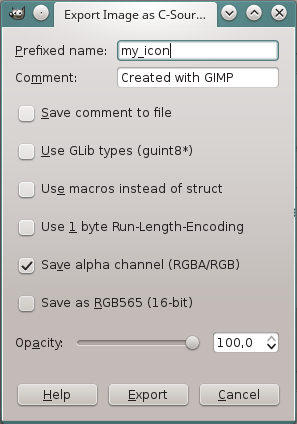

Let’s assume you have an image that you want to use as a window icon in your
cross-platform application that uses libSDL2.
A suitable window icon is 64x64pixels big (other sizes should work as well, though)
and has 32bit RGBA colors, which means it contains an alpha-channel.
Now it would be handy if the icon could just be part of the executable
and if this could be achieved in a platform-independent way.
Furthermore it’d be great if it didn’t require additional dependencies (e.g. to decode image files).
In this tutorial I’ll show how to translate the image into C source file
containing a struct that holds the image data + necessary metadata (width,
height, color depth) and how to load that struct into a SDL_Surface*
and to set that surface as a window icon.
Creating the source file …
.. using GIMP
An easy way to create that source file is using GIMP, an open source image manipulation program.
- Open your icon in GIMP
- Click “File” -> “Export As…”
- Select “C Source Code” as filetype (not “C Source Code Header”, that uses a different format!)
- Save it as “my_icon.c” (or some other name, it’s really up to you…) into the same directory your source code (that creates the SDL2 window) lives in.
Make sure to choose the export settings like this:

So you do want an alpha-channel and you don’t want any of the other options.
“Prefixed name” is the name the C struct will have.
So this part is done, you can open my_icon.c in a text editor, it will look similar to this:
/* GIMP RGBA C-Source image dump (my_icon.c) */
static const struct {
unsigned int width;
unsigned int height;
unsigned int bytes_per_pixel; /* 2:RGB16, 3:RGB, 4:RGBA */
unsigned char pixel_data[64 * 64 * 4 + 1];
} my_icon = {
64, 64, 4,
"\236\234\232\377\222\220\216\377\210\206\205\377|{y\377sqp\377rsr\377sqp"
" ... and lots of other lines of more-or-less text, containing the ... "
" ... encoded image ... "
};
The (uncompressed) RGBA image data is encoded as an escaped C string with chars that encode the values of the image’s bytes.
.. without using GIMP
If you don’t want to use GIMP, I wrote a little commandline tool that converts
images into source files in the same format as GIMP’s C export:
https://github.com/DanielGibson/Snippets/blob/master/ImgToC.c
It needs stb_image.h
and thus can convert from any image type that is supported by stb_image,
including TGA, PNG, BMP and JPG. It should compile with any halfway-recent C compiler.
See the big comment block at the beginning of the file on how to use it.
Setting the SDL2 window icon from our generated source file
SDL_SetWindowIcon() is used to set the window icon.
I’ll show you how to write a function static void SetSDLIcon(SDL_Window* window)
that sets an icon from the exported C source code for the given SDL_Window* -
you can just call it from wherever your code creates the SDL_Window*
(after the window has been created).
First you’ll need to convert that image struct into a SDL_Surface*,
using SDL_CreateRGBSurfaceFrom()
As you can see, SDL_CreateRGBSurfaceFrom() expects some masks for the
colors + alpha, so it’ll know how to interpret the data it’ll be fed.
These masks should extract the red/green/blue/alpha byte from an endian-specific
32bit integer value of your data. You can read about the details on the
SDL_CreateRGBSurfaceFrom() wiki page.
Anyway, the very first thing you do in the SetSDLIcon() function is
#include "my_icon.c", so the my_icon struct is part of the function and
can be used there.
Note: Because include "my_icon.c" looks so strange, I usually rename those
generated files to my_icon.h. This could also prevent trouble with your
build system which is not supposed to compile “my_icon.c” - it’s compiled
as part of the source file that includes it.
Afterwards you calculate the masks like shown below (this code actually
supports both 24bit RGB and 32bit RGBA data). Note how my_icon.bytes_per_pixel
is used to decide whether it’s RGB or RGBA.
| |
Now create the SDL_Surface* using SDL_CreateRGBSurfaceFrom().
You can get the width and height parameters directly from the corresponding
my_icon fields. depth is expected in bits per pixel, while my_icon
offers bytes_per_pixel, so that value is multiplied with 8.
pitch is “the length of a row of pixels in bytes” and can theoretically
be used to copy just a rectangle out of the source image. While we use the
whole image, it must be my_icon.bytes_per_pixel * my_icon.width either way.
| |
Finally, set the surface as window icon and free it (SDL_SetWindowIcon()
will duplicate the contained data anyway):
| |
Done!
This method can be used to integrate any image into your executable, of course,
but it’s added uncompressed so the executable can get pretty big.
It’s ok for a window icon (and maybe a handful of other icons or cursors),
but if you need more data, you probably shouldn’t integrate it into your
executable, especially not uncompressed. Maybe use a zip file or something.